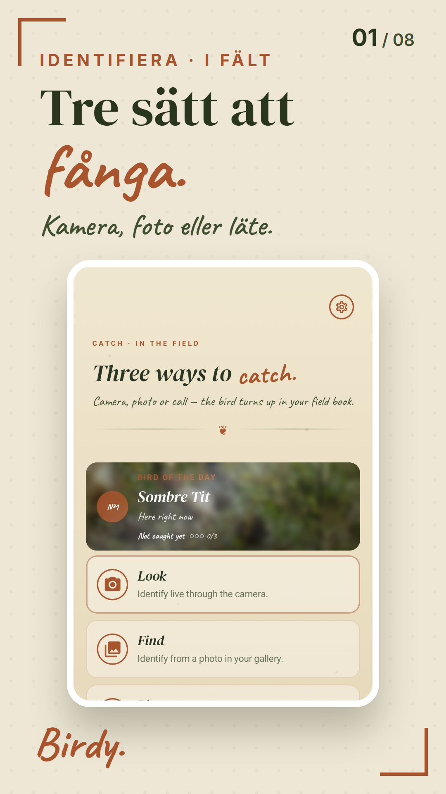

Samma skärm (Identifiera), samma funktioner i alla tre. Det som skiljer är känslan. Klicka på den du gillar, blanda gärna ("A men mörkare") i terminalen.

Idag: Field Journal. Pappersbakgrund med prickar, mycket handskrift (Caveat), kursiv serif överallt, kopparramar runt korten. Charmigt, men lite pysselbok snarare än exklusivt.
Dagens fågel
Identifiera
Samma linje som nya webben du släppte idag: helbildsfoto med rostmörk ton, stor serif, tunna linjer i stället för ramar, handskriften nästan borta. Känns som en påkostad fältbok. Behåller Birdys identitet. Min rekommendation.
Identifiera
Mörk premium: varm svart botten, mässingsaccent, fotona lyser. Mest "exklusivt" (tänk Leica/kameraapp), men största förändringen och sämre i starkt dagsljus ute i fält. Kräver att alla skärmar får mörka varianter.
God morgon
Minimal och luftig: sans-serif, stora rundade kort, mjuka skuggor, serif bara på artnamn. Modernast och enklast att läsa, men generisk. Ser ut som många andra appar och tappar mycket av Birdys karaktär.